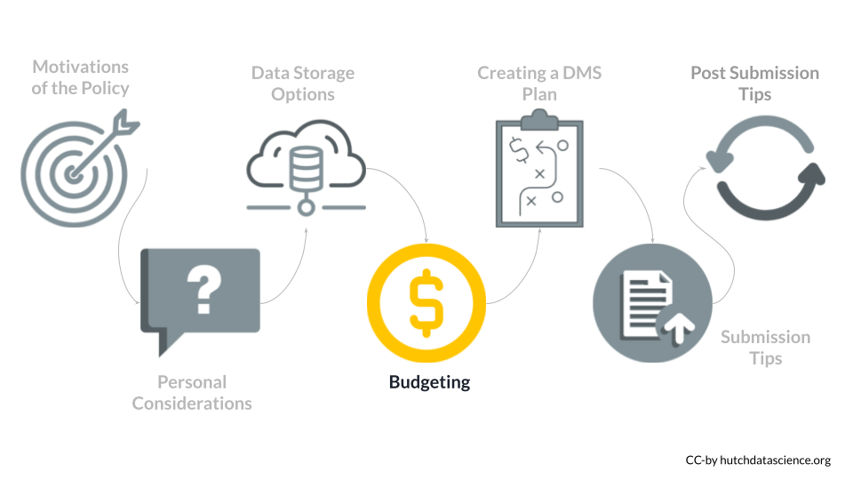
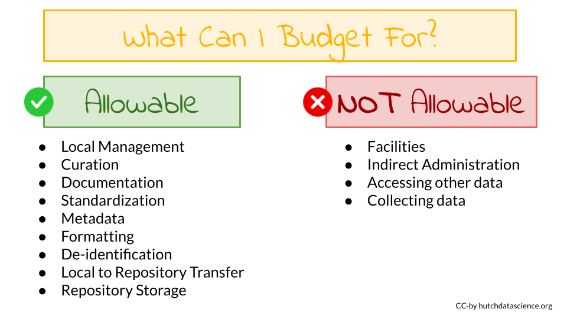

Chapter 4 Budgeting for Data Sharing
In this section we will describe what you need to think about in terms of how to budget for the management and sharing of your data, as well as what money you can request to help you carry out your DMS plans.

You can refer to the NIH overview about budgeting for this policy of which research will be covered by this new policy.

4.1 Allowable Costs
You can request funding for costs related to your data including personnel and fees associated with:
- Curating the data (but not gaining access or collecting)
- Local data management before sharing
- Developing supporting documentation
- Standardizing the data
- Preparing the metadata to be findable, interpretable, and reusable
- Formatting the data for storage in a repository
- Transmission of the data from local storage to a repository
- De-identification of the data
- Data deposit fees for storing data in a repository to share the data for a specific amount of time
- If a DMS plan states that the data will be shared for 10 years in a repository, then the costs for the entire 10 years needs to be paid prior to the end of the funding award period (period of performance) - this includes scientific data or metadata that is shared after the award period.
- If the DMS plan states that the data will be shared in multiple repositories, the costs for each repository can be included in the budget.
You can refer to the NIH Supplemental Information for Allowable Costs for more information.
If you have questions, you can email: SciencePolicy@od.nih.gov
4.2 Unallowable costs
The following costs are not allowed in the budget:
- Infrastructure costs (for example facilities and administrative costs should be indirect costs)
- Costs related to gaining access to the data
- Costs related to collecting the data
4.3 Budget Implementation
To requests for funds for data management and sharing:
☑️ For direct costs - use the R&R Budget Form: single line item in section F. Other Direct Costs
☑️ Budget justification - provide a brief summary of the DMS plan and costs- use PHS 398 Modular Budget Form: as text embedded within the Additional Narrative Justification and the R&R Budget Form: embedded within the section L. Budget Justification attachment
☑️ Check that any related costs for other data policies like the Genomic Data Sharing (GDS) Policy are also included
See additional guidance at the NIH Implementation Details for this policy
4.3.1 Summary
- Don’t double up requests for direct and indirect support
- Activities that get supported must happen during project period (for example if storing data for 10 years - must pay for those years in advance)
4.4 Assessment of Budget
- Peer reviewers will have access to the budget justification but not the DMS Plan
- Peer reviewers may provide comments on the reasonableness of the budget
- These comments will not impact the score